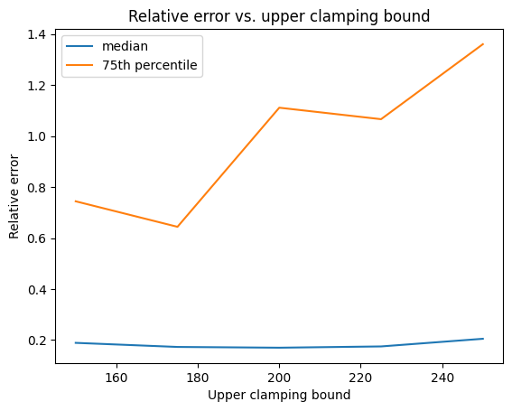
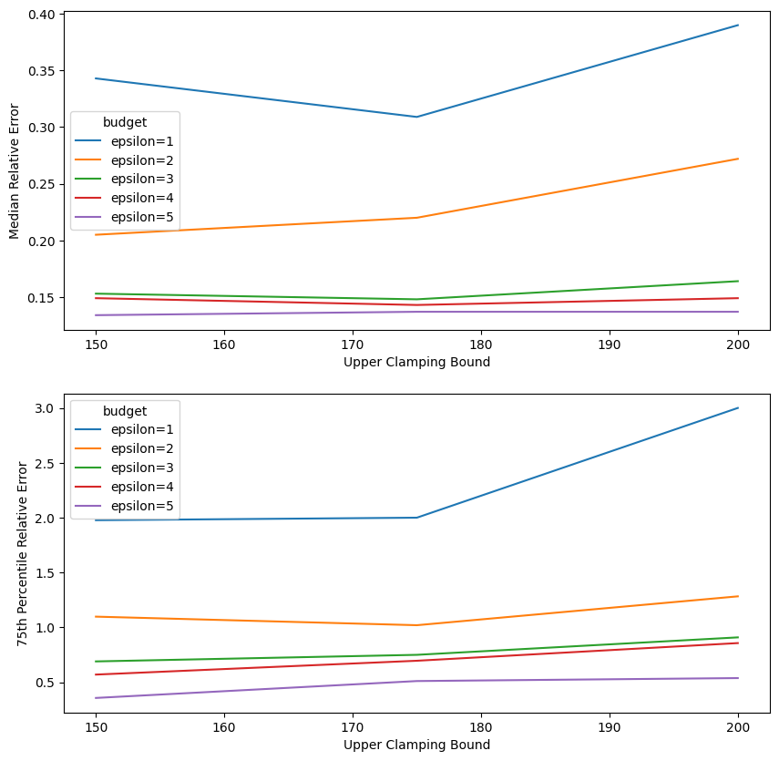

Tuning parameters#
Note
This tutorial uses features that are only available on a paid version of Tumult Analytics. If you would like to hear more, please contact us at info@tmlt.io.
In the previous two tutorials in this series, we explored how to measure the error of Tumult Analytics programs using both built-in and custom metrics. Measuring error is especially useful for optimizing the privacy/utility trade-offs of our differentially private mechanisms. As its name suggests, the SessionProgramTuner class is designed to help us do just that. Let’s see how it works!
Setup#
As in earlier tutorials, we import the necessary packages and download the data.
import matplotlib.pyplot as plt
import seaborn as sns
from pyspark import SparkFiles
from pyspark.sql import SparkSession, DataFrame
from tmlt.analytics.keyset import KeySet
from tmlt.analytics.privacy_budget import PureDPBudget
from tmlt.analytics.protected_change import AddOneRow, AddMaxRows
from tmlt.analytics.query_builder import QueryBuilder
from tmlt.analytics.session import Session
from tmlt.analytics.program import SessionProgram
from tmlt.analytics.tuner import SessionProgramTuner, Tunable
from tmlt.analytics.metrics import MedianRelativeError, QuantileRelativeError
# Analytics' multi-error reports, which we will see in this tutorial,
# have a built-in progress bar that requires Spark's native progress bar
# to be disabled.
# So, here we configure Spark to turn off that progress bar,
# by passing the relevant option to the SparkSession builder.
spark = (
SparkSession
.builder
.config("spark.ui.showConsoleProgress", "false")
.getOrCreate()
)
spark.sparkContext.addFile(
"https://tumult-public.s3.amazonaws.com/demos/library/v2/members.csv"
)
members_df = spark.read.csv(
SparkFiles.get("members.csv"), header=True, inferSchema=True
)
# ZIP code data is based on https://worldpopulationreview.com/zips/north-carolina
spark.sparkContext.addFile(
"https://tumult-public.s3.amazonaws.com/nc-zip-codes.csv"
)
nc_zip_codes_df = spark.read.csv(
SparkFiles.get("nc-zip-codes.csv"), header=True, inferSchema=True
)
nc_zip_codes_df = nc_zip_codes_df.withColumnRenamed("Zip Code", "zip_code")
nc_zip_codes_df = nc_zip_codes_df.withColumn("zip_code", nc_zip_codes_df.zip_code.cast('string'))
nc_zip_codes_df = nc_zip_codes_df.fillna(0)
Parametrizing the SessionProgram#
We previously used a SessionProgram that calculated the total number of books borrowed by library members, grouped by ZIP code. The query included clamping bounds:
nc_zip_code_keys = KeySet.from_dataframe(nc_zip_codes_df.select("zip_code"))
query = (
QueryBuilder("members")
.groupby(nc_zip_code_keys)
.sum("books_borrowed", low=0, high=500)
)
The upper clamping bound of 500 was chosen arbitrarily. To tune this value, we must first parametrize it. To do this, we must declare this parameter as part of our SessionProgram, and then use it in our query.
class BooksByZipCodeProgram(SessionProgram):
class ProtectedInputs:
members: DataFrame
class UnprotectedInputs:
nc_zip_codes: DataFrame
class Outputs:
books_by_zip_code: DataFrame
class Parameters:
upper_clamping_bound: int
def session_interaction(self, session: Session):
nc_zip_codes_df = self.unprotected_inputs["nc_zip_codes"]
nc_zip_code_keys = KeySet.from_dataframe(nc_zip_codes_df.select("zip_code"))
query = (
QueryBuilder("members")
.groupby(nc_zip_code_keys)
.sum("books_borrowed", low=0, high=self.parameters["upper_clamping_bound"])
)
budget = session.remaining_privacy_budget
return {"books_by_zip_code": session.evaluate(query, budget)}
Since our program now has a parameter, we must specify the parameter’s value when we build it.
zip_code_program = (
BooksByZipCodeProgram.Builder()
.with_private_dataframe(
source_id="members",
dataframe=members_df,
protected_change=AddOneRow()
)
.with_public_dataframe(
source_id="nc_zip_codes",
dataframe=nc_zip_codes_df
)
.with_privacy_budget(PureDPBudget(3))
.with_parameter("upper_clamping_bound", 500)
.build()
)
But we don’t want to specify it just yet — we first want to try different values for it, and observe which ones give us acceptable accuracy.
Running multiple error reports at once#
Let’s define a SessionProgramTuner with our program class to compute two metrics: the median and 75th percentile relative error. We’ve already seen similar metrics, but this time we are giving them a short name.
class SimpleTuner(SessionProgramTuner, program=BooksByZipCodeProgram):
metrics = [
MedianRelativeError(
output="books_by_zip_code",
measure_column="books_borrowed_sum",
join_columns=["zip_code"],
name="mre"
),
QuantileRelativeError(
output="books_by_zip_code",
measure_column="books_borrowed_sum",
quantile=0.75,
join_columns=["zip_code"],
name="qre_0.75",
),
]
Now that we have defined our class, let’s build it. Unlike a SessionProgram, a SessionProgramTuner does not require specifying all parameters. Instead, when initializing it, we can specify one or more parameters as Tunable.
tuner = (
SimpleTuner.Builder()
.with_private_dataframe(source_id="members", dataframe=members_df, protected_change=AddOneRow())
.with_public_dataframe(source_id="nc_zip_codes", dataframe=nc_zip_codes_df,)
.with_privacy_budget(PureDPBudget(3))
.with_parameter("upper_clamping_bound", Tunable("upper_clamping_bound"))
.build()
)
In this case, we have designated the upper clamping bound as a Tunable parameter. However, as we will see later, Tunable objects can also be used to parametrize other inputs to the program, such as the privacy budget or the input data.
Now that it’s built, we can run an error report on our SessionProgramTuner object by specifying concrete values for all Tunable parameters.
tuner.error_report({"upper_clamping_bound": 500})
More usefully, we can generate many error reports at once:
multi_error_report = tuner.multi_error_report([
{"upper_clamping_bound": bound} for bound in [25, 75, 150, 250, 400]
])
Running a total of 5 error reports.
Done!
multi_error_report() returns a MultiErrorReport, which can be iterated over to get individual ErrorReport objects and provides a method to get all of the metrics in a single Pandas DataFrame.
df = multi_error_report.dataframe()
print(df)
upper_clamping_bound mre_default qre_0.75_default
0 25 0.451 0.537
1 75 0.224 0.362
2 150 0.132 0.319
3 250 0.142 0.567
4 400 0.167 0.689
Looking at these results, we can see that the error seems to be smallest for upper clamping bounds between 150 and 250. We can run a second error report that focuses on this part of the search space:
multi_error_report = tuner.multi_error_report([
{"upper_clamping_bound": bound} for bound in [150, 175, 200, 225, 250]
])
Running a total of 5 error reports.
Done!
We can then plot the results to visualize the privacy-utility trade-off.
df = multi_error_report.dataframe()
sns.lineplot(data=df, x="upper_clamping_bound", y="mre_default", label="median")
sns.lineplot(data=df, x="upper_clamping_bound", y="qre_0.75_default", label="75th percentile")
plt.ylabel("Relative Error")
plt.xlabel("Upper Clamping Bound")
plt.title("Relative Error vs. Upper Clamping Bound")
plt.show()

Setting the clamping bound to about 175 seems to be getting us the best result.
Tuning: not just for parameters!#
We now have a better sense of how our upper clamping bound affects the error of our program. But what about its privacy budget? How will the error change if we use a different privacy budget? We can use a Tunable to find out.
tuner = (
SimpleTuner.Builder()
.with_private_dataframe(
source_id="members",
dataframe=members_df,
protected_change=AddOneRow()
)
.with_public_dataframe(
source_id="nc_zip_codes",
dataframe=nc_zip_codes_df
)
.with_privacy_budget(Tunable("budget"))
.with_parameter("upper_clamping_bound", Tunable("upper_clamping_bound"))
.build()
)
We then specify the values of our Tunable parameters for methods like error_report() and multi_error_report().
multi_error_report = tuner.multi_error_report([
{"budget": PureDPBudget(epsilon), "upper_clamping_bound": bound}
for epsilon in [1, 2, 3, 4, 5]
for bound in [150, 175, 200]
])
Running a total of 15 error reports.
Done!
And plot the privacy-utility trade-off using the optimal upper clamping bound values for each privacy budget.
df = multi_error_report.dataframe()
# Convert 'budget' column to string representation focusing on the 'epsilon' attribute
df['budget'] = df['budget'].apply(lambda x: f"epsilon={x.epsilon}")
fig, axes = plt.subplots(2, 1, figsize=(10, 10))
sns.lineplot(data=df, x="upper_clamping_bound", y="mre_default", hue="budget", ax=axes[0])
sns.lineplot(data=df, x="upper_clamping_bound", y="qre_0.75_default", hue="budget", ax=axes[1])
axes[0].set_ylabel("Median Relative Error")
axes[1].set_ylabel("75th Percentile Relative Error")
axes[0].set_xlabel("Upper Clamping Bound")
axes[1].set_xlabel("Upper Clamping Bound")
plt.show()

A Tunable can also replace a DataFrame argument (to run program on different datasets in the same Tuner), or a protected change (to evaluate the impact of changing how the data is protected).
For example, if we wanted to fix the clamping bound parameter, but tune both the DataFrame and protected change used by the program, we would supply a Tunable for each of these arguments, like so:
tuner = (
SimpleTuner.Builder()
.with_private_dataframe(
source_id="members",
dataframe=Tunable("members_df"),
protected_change=Tunable("protected_change")
)
.with_public_dataframe(
source_id="nc_zip_codes",
dataframe=nc_zip_codes_df
)
.with_privacy_budget(PureDPBudget(3))
.with_parameter("upper_clamping_bound", 500)
.build()
)
We can then run the error report with different Tunable values:
multi_error_report = tuner.multi_error_report([
{"members_df": df, "protected_change": protected_change}
for df in [members_df, members_df.sample(fraction=0.5)]
for protected_change in [AddOneRow(), AddMaxRows(2)]
])
Running a total of 4 error reports.
Done!
For more information, consult the API reference for Tunable and SessionProgramTuner.